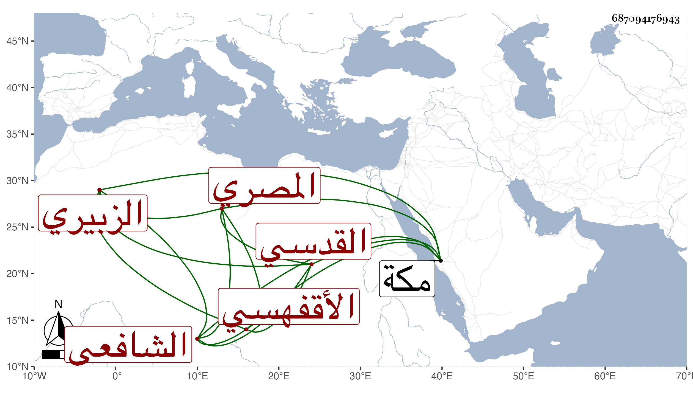

0902Sakhawi.DawLamic.ITO20230111-ara1.EIS1600.687094176943
Biography ID: 687094176943
547
محمد بن عبد الرحمن بن عبد الله الشمس أبو الخير بن التقي بن ناصر الدين الزبيري المصري الأقفهسي القدسي الشافعي. قدم مكة بعد الثلاثين فجاور بها وتأهل فيها بست الكل ابنة الإمام الرضي بن المحب الطبري فولدت له ذكرا وأنثى . مات بها في ربيع الآخر سنة ثلاث وأربعين . أرخه بن فهد .
